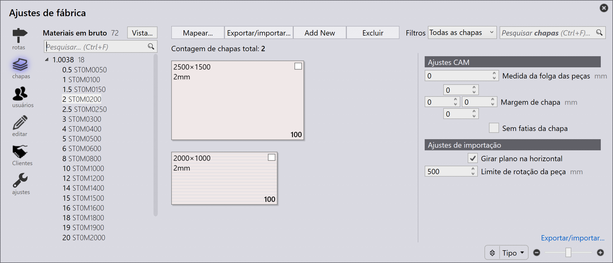
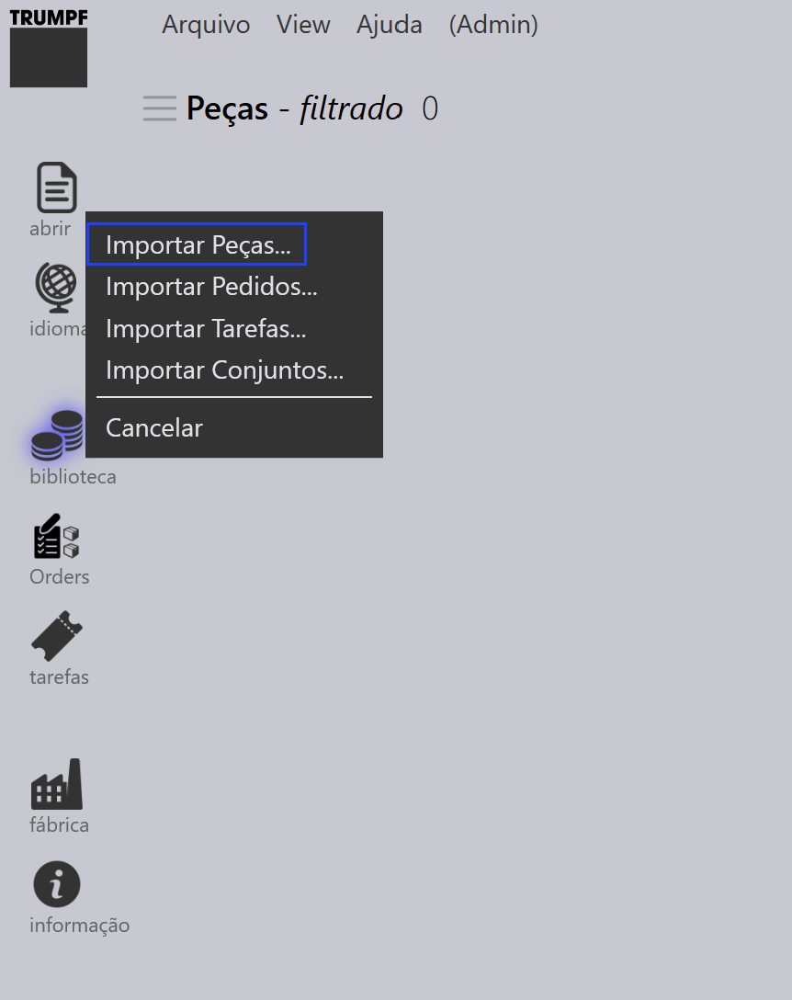
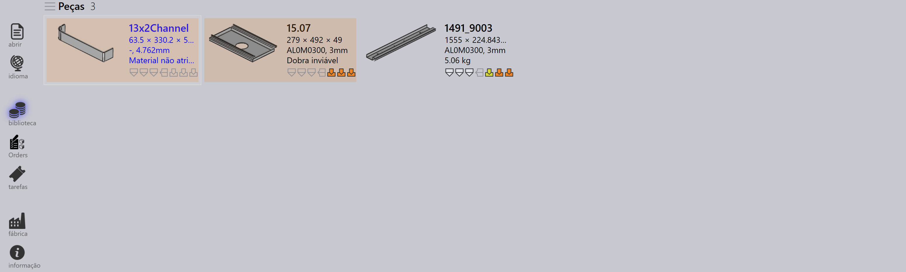
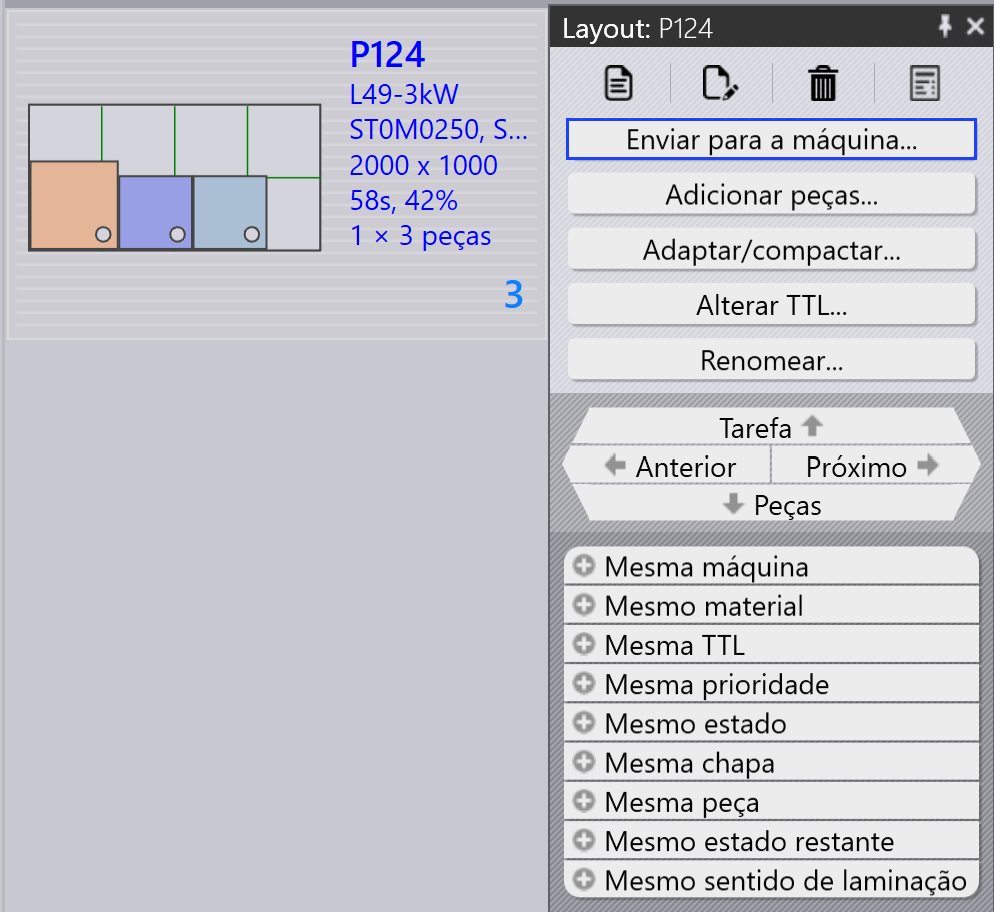
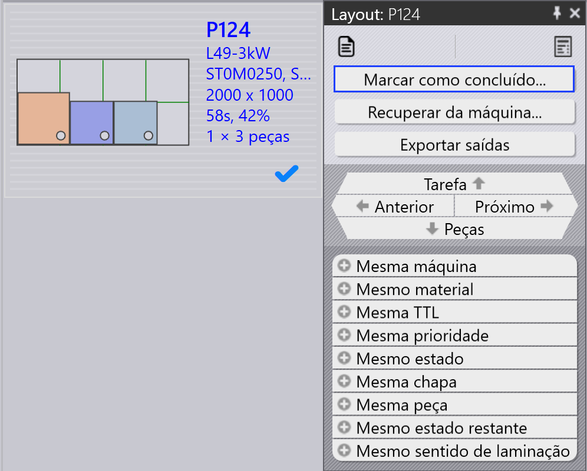

Fluxo de Trabalho
TruSmartCAM é um Sistema de Execução de Manufatura que gerencia e otimiza processos de fabricação de chapas metálicas. Um fluxo de trabalho no TruSmartCAM consiste em uma série de etapas que você segue para concluir uma tarefa ou processo específico. Você pode personalizar o fluxo de trabalho para se adequar a diferentes processos de fabricação e adaptá-lo às suas necessidades específicas. O fluxo de trabalho no TruSmartCAM normalmente inclui as seguintes etapas:
1. Configurar o sistema
Configure o TruSmartCAM para corresponder ao seu ambiente de fabricação. Esta etapa fundamental inclui definir máquinas com suas capacidades e parâmetros, adicionar materiais disponíveis e faixas de espessura, configurar bibliotecas de ferramentas com punções e matrizes, criar folhas de configuração para diferentes configurações de máquina e gerenciar contas de usuários com permissões apropriadas. Um sistema adequadamente configurado garante processamento preciso e previne erros em etapas posteriores. Esta configuração é tipicamente realizada uma vez durante a implantação inicial, com atualizações periódicas conforme sua fábrica evolui.
Para mais informações, consulte Adicionar/Remover máquina, Material, Chapas, Configurar ferramentas e Configurar usuários.

2. Adicionar peças à biblioteca
Importe peças CAD 2D ou 3D para a Biblioteca de Peças usando formatos suportados como arquivos DXF, DWG ou STEP. Durante a importação, o TruSmartCAM analisa automaticamente a geometria da peça, valida a fabricabilidade, atribui a tecnologia de chapa metálica necessária (laser, punção ou combinação) e gera miniaturas de visualização. As peças importadas aparecem como blocos na visualização da biblioteca, onde ícones codificados por cores indicam o status da peça, tipo de tecnologia, requisitos de material e quaisquer problemas detectados. Este sistema visual permite avaliação rápida da prontidão das peças em um relance.
Para mais informações, consulte Library.

3. Verificar peças e ferramentas
Revise cada peça importada quanto a possíveis problemas de produção. Verifique se a geometria da peça é válida e fabricável, se as atribuições de ferramentas estão corretas e disponíveis, se as seleções de material e espessura correspondem ao inventário e se as sequências de dobra estão devidamente definidas para peças conformadas. Se problemas forem detectados, abra a peça no TecZone para modificar a geometria, reatribuir ou otimizar ferramentas, ajustar parâmetros de processamento ou corrigir especificações de material. Resolver problemas nesta etapa previne atrasos na produção e reduz refugo durante a fabricação.
Para mais informações, consulte Estado da peça e Status de ferramentas.

4. Organizar peças em trabalhos
Agrupe peças validadas em trabalhos com base nos requisitos de produção. Um trabalho representa uma unidade de produção lógica que pode incluir peças de um único pedido de cliente, peças que compartilham materiais e espessura comuns, peças com prazos de entrega semelhantes ou uma combinação baseada em sua estratégia de produção. Trabalhos fornecem um contêiner para planejamento, permitem processamento em lote de peças relacionadas, possibilitam utilização eficiente de material através do nesting e simplificam rastreamento e relatórios. Trabalhos podem ser criados manualmente selecionando peças ou automaticamente com base em regras predefinidas e filtros.
Para mais informações, consulte Jobs.

5. Planejar trabalhos para máquinas de produção
Uma vez que um trabalho é criado, atribua-o a uma máquina de produção apropriada. Considere as capacidades da máquina incluindo tecnologias suportadas (laser, punção, torre), capacidade de material e espessura, ferramentas disponíveis e carga de trabalho atual. Se existirem múltiplas máquinas adequadas, selecione com base na prioridade de produção, disponibilidade da máquina, requisitos de configuração ou otimização de custos. A atribuição pode ser manual para flexibilidade ou automática com base em regras pré-configuradas e algoritmos de programação de máquina.
Para mais informações, consulte Planejar trabalho.

6. Liberar NC para trabalhos
Nesta etapa, os layouts de corte são gerados. Você ainda pode editar layouts e adicionar tecnologias de corte ao layout usando TecZone. Em seguida, exporte a saída NC e transfira-a para o controlador da máquina ou um local de rede designado. O trabalho é então bloqueado para evitar modificações adicionais, e seu status é atualizado para "Liberado" para rastreamento de produção.
Para mais informações, consulte Enviar/Recuperar NC.

7. Concluir produção e finalizar trabalhos
Execute o trabalho liberado na máquina atribuída. Durante a produção, o operador da máquina segue o programa NC, verifica a qualidade das peças durante o corte, gerencia o carregamento e descarregamento de material e resolve quaisquer alarmes ou problemas da máquina. Após a conclusão da produção, marque peças individuais ou o trabalho inteiro como concluído no TruSmartCAM. Esta etapa final atualiza os registros de inventário, registra o tempo real de produção e uso de material, arquiva dados do trabalho para relatórios e análise e completa o ciclo do fluxo de trabalho.
Para mais informações, consulte Marcar como concluído.
